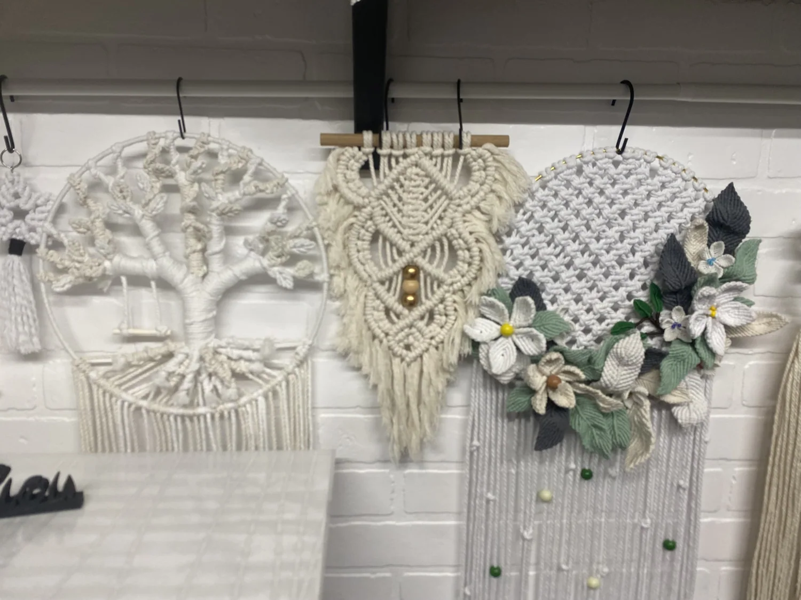
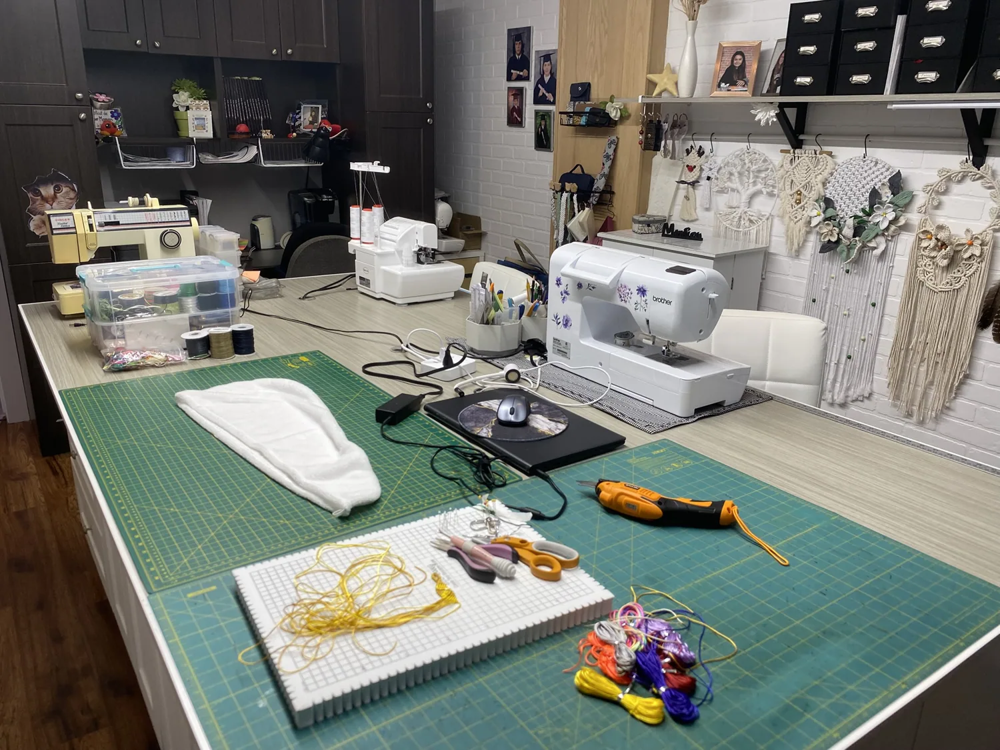
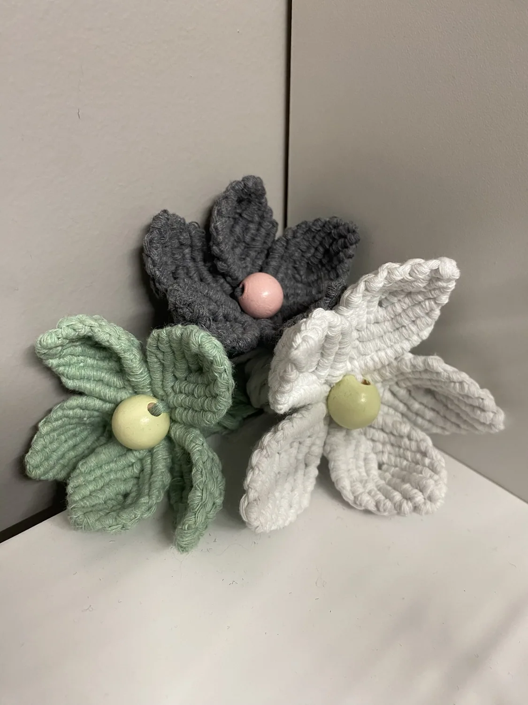

FAIT À LA MAIN, AVEC CŒUR
Des créations
uniques,
à votre image.
Couture, accessoires et créations artistiques : découvrez l’univers de Mamilou, où chaque pièce raconte une histoire.

L'ATELIER MAMILOU
Un aperçu de mes créations
Des idées transformées en objets uniques, pratiques ou décoratifs. Voici quelques pièces sorties de l’atelier.
Ces photos présentent des réalisations. Pour connaître les possibilités de créations ou de personnalisation, contactez Mamilou.

SUR MESURE, À VOTRE GOÛT
La couture,
au fil de vos idées.
Un projet en tête ? Une envie de création textile ? Parlons ensemble de ce qu’il serait possible de réaliser.
Les demandes sont discutées individuellement selon le projet et les disponibilités de l’atelier.
Discuter d’un projet ↗DERRIÈRE CHAQUE CRÉATION
Le plaisir de créer.
Bienvenue chez Mamilou, un univers de confection et de créations artisanales où les matériaux, les couleurs et les petits détails prennent vie.
Chaque pièce présentée ici témoigne du temps, de la patience et du plaisir de fabriquer de ses mains.
Un petit atelier, beaucoup d'imagination.
UNE QUESTION ? UNE IDÉE ?
Créons quelque chose ensemble.
Vous aimez une création ou vous souhaitez discuter d'un projet ? Écrivez à Mamilou pour en parler.
Les coordonnées de contact seront ajoutées prochainement.
